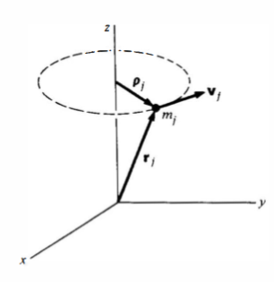

← Back
Angular Momentum and Torque
- For an object with position vector $\textbf{r}$ with respect to some coordinate system and linear momentum $\textbf{p}$, the angular momentum $\textbf{L}$ is given as:
$$\textbf{L} = \textbf{r} \times \textbf{p}$$
- The torque due to force $\textbf{F}$ which acts on a particle at position $\textbf{r}$ is defined by,
$$\tau = \textbf{r} \times \textbf{F}$$
- Both torque and angular momentum change based on the choice origin in our coordinate system.
$$\frac{d\textbf{L}}{dt} = \tau + \left(\frac{d\textbf{r}}{dt} \times \textbf{p}\right)=\tau$$
Fixed Axis Rotation
- When a rigid body rotates about an axis, every particle in the body remains at a fixed distance from the axis.
- If we choose a coordinate system with its origin lying on the axis, then for each particle in the body $|\textbf{r}|=\text{constant}$.

- The moment of inertia $I$ is defined as a geometrical quantity:
$$I = \sum m_j \rho_j^2$$
- Or for continuous masses, it is expressed as an integral:
$$I=\int\rho^2\cdot dm = \int \sigma \rho^2 \cdot dS$$
Moment of Inertia for Common Shapes
- Uniform thin hoop of mass $M$ and radius $R$ axis through the center and perpendicular to the plane of hoop. $\lambda=M/2\pi R$ is the mass per unit length of the hoop. Reducing the mass differential in terms of change in arc length $ds$, we have $dm= \lambda ds$. Thus,
$$I=\int_0^{2\pi R} R^2 \lambda \cdot ds = MR^2$$
- Uniform disk of mass $M$, radius $R$, and axis through the center and perpendicular to the plane of the disk. A disk is a circle spanning an area. So unlike the ring, we'll have to integrate with respect to the area differential $dA$.
$$dm=M\frac{dA}{A}=\frac{M2\pi\rho}{\pi R^2}d\rho$$
$$I=\int_0^R \frac{2M\rho^3}{R^3} \cdot d\rho = \frac{1}{2}MR^2$$
- Uniform thin stick of mass $M$, length $L$, axis through the midpoint and perpendicular to the stick.
$$I=\int_{-L/2}^{L/2} x^2 \cdot dm = \frac{M}{L}\int_{-L/2}^{L/2} x^2 \cdot dx= \frac{1}{12}ML^2$$
- Uniform thin stick, axis at one end and perpendicular to the stick.
$$I=\frac{M}{L}\int_0^L x^2 \cdot dx = \frac{1}{3}ML^3$$
- Uniform sphere of mass $M$, radius $R$, and axis through center. Mass density is given by $\lambda=3M/4\pi R^3$. Reducing the mass differential in terms of the change in volume yields $dm=\lambda dV = \lambda dx dy dz = \lambda \rho^2 \sin{\phi} d\rho d\phi d\theta$.
$$I=\int_0^{2\pi}\int_0^\pi\int_0^R \rho^4 \sin\phi \cdot d\rho d\phi d\theta=\frac{2}{5} MR^2$$
Parallel Axis Theorem
- Let $I_{cm}$ be the moment of inertia about an axis through the center of mass (CM).
- The theorem states that the moment of inertia $I$ about a parallel axis a distance $d$ away, is given by:
$$I=I_{cm}+Md^2$$
Proof:
- If the coordinates are $\textbf{r}$ at the center of mass, for a parallel axis shifted $\textbf{d}$ away, we get coordinates $\textbf{r}'=\textbf{r}-\textbf{d}$ relative to the shifted axis.
- The moment of inertia about $\textbf{d}$ is given by:
$$I=\int(\textbf{r}')^2\cdot dm=\int(\textbf{r}-\textbf{d})^2 \cdot dm = \int r^2 \cdot dm - 2\textbf{d}\int \textbf{r} \cdot dm + \int \textbf{d}^2 \cdot dm=I_{cm}-Md^2$$
Angular Velocity
- We can introduce angular coordinates $\theta_x, \theta_y, \theta_z$ about the $x,y,z$ axes respectively. They cannot be vectors because the way we add them affects the order.
- Even though angular position cannot be a vector, angular velocity can:
$$\omega = \frac{d\theta_x}{dt}\hat{\textbf{i}}+\frac{d\theta_y}{dt}\hat{\textbf{j}}+\frac{d\theta_z}{dt}\hat{\textbf{k}}$$
$$\textbf{v}=\boldsymbol{\omega}\times \textbf{r}$$
Translation and Rotation
| Scenario |
Quantity |
Equation |
| Pure Rotation |
Angular Momentum ($L$) |
$L = I\omega$ |
| Pure Rotation |
Torque ($\tau$) |
$\tau = I\alpha$ |
| Pure Rotation |
Kinetic Energy ($K$) |
$K = \frac{1}{2} I \omega^2$ |
| Rotation & Translation |
Angular Momentum ($L_z$) |
$L_z = I_0 \omega + (\mathbf{R} \times M \mathbf{V})_z$ |
| Rotation & Translation |
Torque ($\tau_z$) |
$\tau_z = \tau_0 + (\mathbf{R} \times \mathbf{F})_z$ |
| Rotation & Translation |
Torque about Center of Mass ($\tau_0$) |
$\tau_0 = I_0 \alpha$ |
| Rotation & Translation |
Total Kinetic Energy ($K$) |
$K = \frac{1}{2} I_0 \omega^2 + \frac{1}{2} M V^2$ |
Gyroscopic Motion
- This circular motion of the angular momentum vector is called precession.
- Angular momentum ($\vec{L}$) points along the spin axis (e.g., horizontally along the y-axis). Torque ($\vec{\tau}$) due to gravity acts perpendicular to this angular momentum direction.
- Because torque is the rate of change of angular momentum, when torque is perpendicular to the angular momentum vector, it doesn't speed up or slow down the wheel’s spinning. Instead, it changes the direction of $\vec{L}$.
- The angular velocity of precession $\Omega$ is given by,
$$\Omega=\frac{lW}{I_o\omega}$$
Governing Equations
- Torque and Angular Momentum: $\tau = \frac{dL}{dt}$
- Similar to linear motion: $F = \frac{dP}{dt}$ However, angular momentum ($L$) and angular velocity ($\omega$) are not as simply related as linear momentum ($P$) and velocity ($V$).
Angular Momentum Expressions
For a rigid body moving with translational velocity $\mathbf{V}$ and rotating about its center of mass:
- Total angular momentum $\mathbf{L}$:
$$\mathbf{L} = \mathbf{R} \times M\mathbf{V} + \sum \mathbf{r}_j' \times m_j \mathbf{\dot{r}}_j'$$
$$\mathbf{\tau} = \mathbf{R} \times \mathbf{F} + \sum \mathbf{r}_j' \times \mathbf{f}_j$$
where:
- $\mathbf{r}_j'$ is the position vector of the mass $m_j$ relative to the center of mass.
- $\mathbf{R}$ is the position vector of the center of mass.
- $\mathbf{F}$ is the total external force.
Relationship between torque and angular momentum
Starting from $\mathbf{\tau} = \frac{d\mathbf{L}}{dt}$, we have:
$$\mathbf{R} \times \mathbf{F} + \sum \mathbf{r}_j' \times \mathbf{f}_j = \frac{d}{dt}(\mathbf{R}\times M\mathbf{V}) + \frac{d}{dt}\left(\sum \mathbf{r}_j'\times m_j \mathbf{\dot{r}}_j'\right)
$$
Since $\mathbf{F} = M\mathbf{A}$, the terms involving $\mathbf{R}$ cancel, leaving:
$$\sum \mathbf{r}_j' \times \mathbf{f}_j = \frac{d}{dt}\left(\sum \mathbf{r}_j'\times m_j \mathbf{\dot{r}}_j'\right)$$
Angular Momentum and Angular Velocity ($\omega$)
- Relationship between the position vector and angular velocity:
$$\mathbf{\dot{r}}_j' = \boldsymbol{\omega} \times \mathbf{r}_j'$$
- Thus, the angular momentum about the center of mass ($\mathbf{L}_0$):
$$\mathbf{L}_0 = \sum \mathbf{r}_j' \times m_j(\boldsymbol{\omega} \times \mathbf{r}_j')$$
Simplifying notation:
$$\mathbf{L} = \sum \mathbf{r}_j \times m_j(\boldsymbol{\omega} \times \mathbf{r}_j)$$
- Rotational Kinematic Energy:
$$K_{rot} = \frac{1}{2}\boldsymbol{\omega} \cdot \textbf{L}$$
Using $\boldsymbol{\omega} = \omega_x \mathbf{i} + \omega_y \mathbf{j} + \omega_z \mathbf{k}$, the cross product simplifies to:
- General vector cross product:
$$\boldsymbol{\omega} \times \mathbf{r} = (z\omega_y - y\omega_z)\mathbf{i} + (x\omega_z - z\omega_x)\mathbf{j} + (y\omega_x - x\omega_y)\mathbf{k}$$
Component-wise evaluation (for example, x-component $L_x$):
$$[\mathbf{r}\times(\boldsymbol{\omega}\times\mathbf{r})]_x = y(\boldsymbol{\omega}\times\mathbf{r})_z - z(\boldsymbol{\omega}\times\mathbf{r})_y$$
After substitution, the simplified x-component of angular momentum becomes:
$$L_x = \sum m_j(y_j^2 + z_j^2)\omega_x - \sum m_j x_j y_j\omega_y - \sum m_j x_j z_j\omega_z$$
Tensor of Inertia Definitions
Introduce symbols for simplified notation:
- Moment of inertia about x-axis: $I_{xx} = \sum m_j(y_j^2 + z_j^2)$
- Product of inertia terms:
$$I_{xy} = -\sum m_j x_j y_j,\quad I_{xz} = -\sum m_j x_j z_j$$
- $I_{xx}, I_{xy}, I_{xz}$ are called moments and products of inertia.
- Moments of inertia describe how mass is distributed relative to axes of rotation.
- Products of inertia represent asymmetries in mass distribution.
Tensor of Inertia for a Rotating Skew Rod
Problem: A massless rod of length $2l$ separates two equal masses $m$. The rod is skewed at angle a with the vertical, and rotates around the $z$ axis with angular velocity $\omega$.

- We can borrow spherical coordinates for this problem to generalize the coordinates.
- For particle number 1:
$$\begin{pmatrix} l\sin{(90-\alpha)}\cos{\omega t} \\
l\sin{(90-\alpha)}\sin{\omega t} \\
-l\sin{\alpha}
\end{pmatrix}=\begin{pmatrix} l\cos{\alpha}\cos{\omega t} \\
l\cos{\alpha}\sin{\omega t} \\
-l\sin{\alpha}
\end{pmatrix}$$
- Here, the problem demands us to flip the $xy$ plane by 90 degrees hence the offset.
- For particle 2:
$$\begin{pmatrix}
-l\cos{\alpha}\cos{\omega t} \\
-l\cos{\alpha} \sin{\omega} \\
l\sin{\alpha}
\end{pmatrix}$$
$$I_{xx} = 2m(l^2 \cos^2{\alpha}\sin^2{\omega t} + l^2\sin^2{\alpha})$$
$$I_{xy}=-(m_1x_1y_1+m_1x_2y_2)=-2m l^2\cos^2{\alpha}\cos{\omega t}\sin{\omega t}$$
$$I_{xz}=-m_1x_1z_1-m_2x_2z_2=2ml^2\cos{\alpha}\cos{\omega t} \sin{\alpha}$$
- The other terms can be evaluated to yield the tensor:
$$2m\begin{pmatrix}
l^2\cos^2{\alpha}\sin^2{\omega t} + l^2 \sin^2{\alpha} & -l^2\cos^2{\alpha} \cos{\omega t} \sin{\omega t} & l^2 \cos{\alpha} \sin{\alpha} \cos{\omega t} \\
-l^2\cos^2{\alpha} \cos{\omega t} \sin{\omega t} & l^2\cos^2{\alpha}\cos^2{\omega t} + l^2 \sin^2{\alpha} &
l^2 \cos{\alpha} \sin{\alpha} \sin{\omega t} \\
l^2 \cos{\alpha} \sin{\alpha} \cos{\omega t} &
l^2 \cos{\alpha} \sin{\alpha} \sin{\omega t} &
l^2\sin^2\alpha
\end{pmatrix}$$
Changing Principal Axis
Torque-free Precession
- A spinning coin (such as a quarter) dropped with a slight tilt will wobble as it falls.
- This wobbling, where the symmetry axis slowly rotates in space, is called torque‐free precession, because there is no external torque acting on the system.
- A similar phenomenon occurs with the Earth, whose spin axis wanders slightly around the polar axis.
- When no external torque is present ($d\mathbf{L}/dt = 0$), the total angular momentum $\mathbf{L}$ of the body is constant in space.
- However, the angular velocity $\boldsymbol{\omega}$ may not be perfectly aligned with a principal axis, so $\boldsymbol{\omega}$ must adjust in such a way that $\mathbf{L}$ remains fixed.
- This adjustment appears as a “wobble” of the symmetry axis.
- Consider a cylindrically symmetric rigid body with moments of inertia $I_{\perp}$ about any transverse axis and $I_{\parallel}$ about the symmetry axis (say the $z$‐axis).

- Let it spin with large angular velocity $\omega_s$ around $z$, giving a primary angular momentum
$$
L_z = I_{\parallel}\,\omega_s.
$$
- If the symmetry axis tilts slightly by angles $\theta_x, \theta_y \ll 1$, one can linearize the rotational equations. To first order,
$$
I_{\perp}\,\frac{d^2\theta_x}{dt^2} + L_z \,\frac{d\theta_y}{dt} = 0,
\quad
I_{\perp}\,\frac{d^2\theta_y}{dt^2} - L_z \,\frac{d\theta_x}{dt} = 0.
$$
- These imply a characteristic precessional frequency
$$
\gamma = \frac{L_z}{I_{\perp}}
= \omega_s \,\frac{I_{\parallel}}{I_{\perp}},
$$

- It characterizes the frequency of the wobble. These coupled differential equations reduce to simple harmonic motion in $\theta_x$ and $\theta_y$, typically producing solutions like
$$
\theta_x(t) \;=\; \theta_0\,\cos(\gamma t),
\quad
\theta_y(t) \;=\; \theta_0\,\sin(\gamma t).
$$
- Hence the symmetry axis of the body traces a slow cone about the fixed direction of $\mathbf{L}$, with angular velocity $\gamma$.
- For a thin coin, $I_{\parallel} = 2\,I_{\perp}$, so $\gamma = 2\,\omega_s$: the wobble is twice as fast as the spin.
- For the Earth, $I_{\parallel} > I_{\perp}$; the spin axis experiences a small amplitude wobble with a theoretical period of about 300 days (though observed to be about 430 days, the “Chandler wobble,” due to Earth’s elasticity and other complex effects).
Euler's Equations
- Introduce an inertial coordinate system which coincides with the instantaneous position of the body's principal axes at time $t$.
- Axes labels: $1, 2, 3$.
- Angular velocity $\boldsymbol{\omega}$ at time $t$ relative to the $1, 2, 3$: system be $\omega_1, \omega_2, \omega_3$.

$$\frac{dL_1}{dt} = I_1 \frac{d\omega_1}{dt} + (I_3-I_1) \omega_3 \omega_2$$
$$\frac{dL_2}{dt} = I_2 \frac{d\omega_2}{dt} + (I_1-I_3) \omega_1 \omega_3$$
$$\frac{dL_3}{dt} = I_3 \frac{d\omega_3}{dt} + (I_1-I_3) \omega_1 \omega_3$$
Stability of Rotational Motion
- A system is stable if displacement from equilibrium gives rise to forces which drive it back toward equilibrium.
- Similarly, a moving system is stable if it responds to a perturbing force by altering its motion only slightly.
- In contrast, an unstable system can have its motion drastically changed by a small perturbing force, possibly leading to catastrophic failure.
- A rotating rigid body can exhibit either stable or unstable motion depending on the axis of rotation.
- A rigid body has three principal axes of rotation, corresponding to its three principal moments of inertia: $I_1 \leq I_2 \leq I_3$.
- If the body rotates about the axis of maximum ($I_3$) or minimum ($I_1$) moment of inertia, small perturbations result in oscillatory corrections, meaning the motion remains stable.
- If the body rotates about the axis with the intermediate moment of inertia ($I_2$), small perturbations grow exponentially, leading to instability.
- The stability condition:
$$\frac{d^2\omega_n}{dt^2}+A\omega_n = 0$$
Where:
$$A=\frac{(I_i-I_j)(I_i-I_k)}{I_jI_k}\omega_i^2$$
- Stable rotation: $A>0$. Unstable rotation: $A<0$.